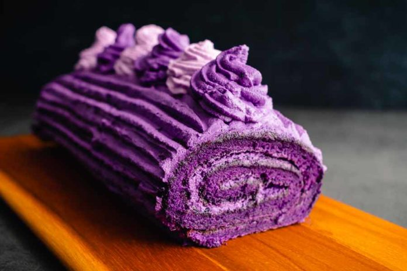
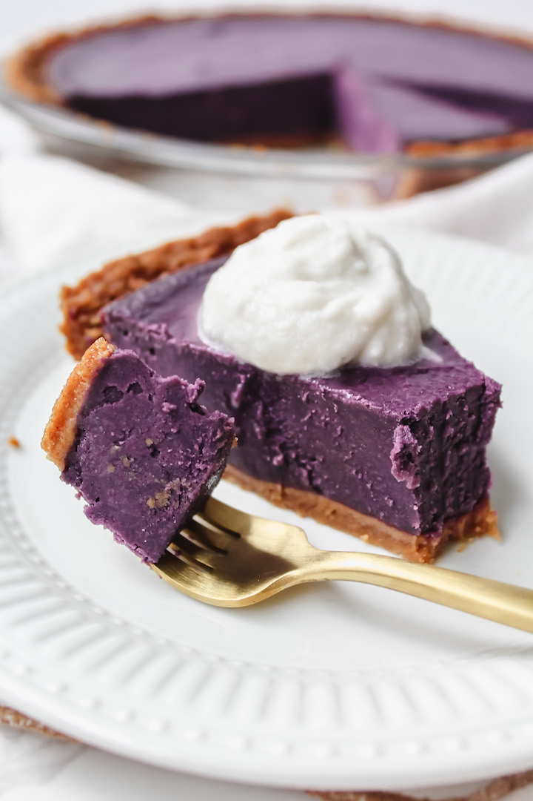
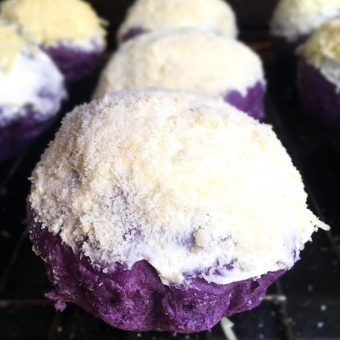

Ube Desserts Cookbook
Contents:
Ube Cake Roll
Total Time
2 hrs 30 mins
Makes 1 roll
Author
Ma Yeth

Ingredients:
For the cake:
- 4 large eggs
- 3/4 cup granulated sugar
- 2 tablespoons vegetable oil
- 1 teaspoon vanilla extract
- 1 cup all-purpose flour
- 1 teaspoon baking powder
- 1/4 teaspoon salt
- 2 tablespoons ube jam or ube halaya (purple yam jam)
- Purple food coloring (optional)
For the filling:
- 1 cup heavy whipping cream
- 1/4 cup powdered sugar
- 2 tablespoons ube jam or ube halaya
For dusting:
Instructions:
- Preheat Oven: Preheat your oven to 350°F (175°C).
- Line a 10x15-inch jelly roll pan with parchment paper, leaving
an overhang on each side to easily lift the cake later.
- Prepare Batter: In a large mixing bowl, beat the eggs and
sugar together using an electric mixer until thick and pale yellow.
This usually takes about 5-7 minutes on medium-high speed.
- Add Oil and Vanilla: Gradually add the vegetable oil and
vanilla extract to the egg mixture, mixing until well
combined.
- Combine Dry Ingredients: In a separate bowl, sift
together the flour, baking powder, and salt.
- Incorporate Dry Ingredients: Gently fold the dry
ingredients into the wet mixture until just combined. Be careful not
to overmix.
- Add Ube Flavor and Color: Fold in the ube jam or ube
halaya into the batter. If desired, add a few drops of purple food
coloring to enhance the color.
- Bake: Pour the batter into the prepared jelly roll pan
and spread it evenly with a spatula. Bake in the preheated oven for
10-12 minutes or until the cake springs back when lightly
touched.
- Prepare Filling: While the cake is baking, prepare the
filling. In a mixing bowl, whip the heavy whipping cream and
powdered sugar together until stiff peaks form. Gently fold in the
ube jam or ube halaya until evenly combined.
- Roll the Cake: Once the cake is baked, immediately loosen
the edges with a knife. While still warm, carefully lift the cake
using the parchment paper overhang and transfer it onto a clean
kitchen towel sprinkled generously with powdered sugar.
- Rolling: Starting from one of the shorter ends, gently
roll the cake and the towel together into a log. Allow the cake to
cool completely while rolled up.
- Fill the Cake: Once cooled, carefully unroll the cake and
spread the prepared filling evenly over the surface, leaving a small
border around the edges.
- Roll Again: Carefully re-roll the cake, this time without
the towel.
- Place the seam side down.
- Chill: Wrap the cake roll in plastic wrap and refrigerate
for at least an hour to firm up before slicing.
- Serve: When ready to serve, dust the cake roll with
powdered sugar and slice into rounds. Enjoy your delicious ube cake
roll!
This recipe yields a delightful ube-flavored cake with a creamy
filling, perfect for any occasion!
Ube Pie
Total Time 2 hrs
Makes 6-8 pieces
Author Magina Jungman

Ingredients:
For the pie crust:
- 1 1/4 cups all-purpose flour
- 1/2 teaspoon salt
- 1/2 cup (1 stick) unsalted butter, cold and cut into small cubes
- 3-4 tablespoons ice water
For the filling:
- 2 cups mashed cooked purple yam (ube)
- 3/4 cup granulated sugar
- 1 cup evaporated milk
- 2 large eggs
- 2 tablespoons unsalted butter, melted
- 11 teaspoon vanilla extract
- 1/4 teaspoon salt
- 1/4 teaspoon ground cinnamon (optional)
Instructions:
- Prepare the dough: In a large mixing bowl, whisk together
the flour and salt. Add the cold cubed butter and use a pastry
cutter or your fingertips to cut the butter into the flour until
the mixture resembles coarse crumbs.
- Add water: Sprinkle 3 tablespoons of ice water over the
mixture and gently mix with a fork until the dough starts to
come together. Add additional ice water, 1 tablespoon at a time,
if needed, until the dough forms a rough ball.
- Shape the dough: Turn the dough out onto a lightly
floured surface and gently knead it a few times until it comes
together. Shape it into a disk, wrap it in plastic wrap, and
refrigerate for at least 30 minutes.
- Roll out the crust: After chilling, roll out the dough
on a lightly floured surface into a circle large enough to fit
your pie dish. Transfer the dough to the pie dish, trim any
excess dough from the edges, and crimp the edges decoratively.
Place the pie crust in the refrigerator while you prepare the
filling..
- Preheat oven: Preheat your oven to 350°F (175°C) for the
ube filling.
- Mix the filling: In a large mixing bowl, combine the
mashed purple yam, granulated sugar, evaporated milk, eggs,
melted butter, vanilla extract, salt, and ground cinnamon
(if using). Mix until smooth and well combined.
- Pour into the crust: Remove the prepared pie crust from
the refrigerator and pour the ube filling into it, spreading it
out evenly.
- Bake: Place the pie in the preheated oven and bake for
45-50 minutes, or until the filling is set and the crust is
golden brown.
- Cool and serve: Remove the pie from the oven and allow
it to cool completely on a wire rack before slicing and serving.
Optionally, you can serve it with whipped cream or vanilla ice
cream.
Enjoy your delicious homemade ube pie!
Ube Ensaymada
Total Time 2 hrs 50 min
Makes 12-16 buns
Author Francia Siers

Ingredients:
For the dough:
- 4 cups all-purpose flour
- 1/2 cup granulated sugar
- 2 1/4 teaspoons (1 packet) active dry yeast
- 1/2 cup warm milk
- 3/4 cup mashed cooked purple yam (ube)
- 3 large eggs
- 1/2 cup unsalted butter, softened
- 1 teaspoon salt
- Additional flour for dusting
For the topping:
- 1/2 cup unsalted butter, softened
- 1 cup grated cheese (such as Edam or cheddar)
- 1 cup granulated sugar
- 1/2 cup breadcrumbs
Instructions:
- Activate yeast: In a small bowl, dissolve the yeast in warm milk.
Let it sit for 5-10 minutes until frothy.
- Add water: Sprinkle 3 tablespoons of ice water over the
mixture and gently mix with a fork until the dough starts to
come together. Add additional ice water, 1 tablespoon at a time,
if needed, until the dough forms a rough ball.
- Mix dry ingredients: In a large mixing bowl, combine the
flour, sugar, and salt.
- Add wet ingredients: Add the activated yeast mixture,
mashed purple yam, eggs, and softened butter to the dry
ingredients.
- Knead: Mix everything until a dough forms. Transfer the
dough to a lightly floured surface and knead for about 8-10
minutes until smooth and elastic. Add more flour as needed if
the dough is too sticky.
- First rise: Place the dough in a greased bowl, cover it
with a clean kitchen towel, and let it rise in a warm place for
about 1-1.5 hours or until doubled in size.
- Prepare ensaymada molds: Grease ensaymada molds or muffin
tins with butter or cooking spray.
- Divide dough: Punch down the risen dough and divide it
into equal portions, depending on the size of your molds. Roll
each portion into a ball.
- Shape ensaymadas: Flatten each ball of dough into an oval
shape. Spread a small amount of softened butter on top of each
oval.
- Roll and shape: Roll each oval into a log, then coil it
into a spiral shape, tucking the end underneath. Place each
shaped ensaymada into the prepared molds.
- Second rise: Cover the molds with a clean kitchen towel
and let the shaped ensaymadas rise for another 30-45 minutes
until puffed up.
- Preheat oven: While the ensaymadas are rising, preheat
your oven to 350°F (175°C).
- Prepare topping: In a bowl, mix together the grated
cheese and granulated sugar.
- Top and bake: Once the ensaymadas have risen, sprinkle
the cheese-sugar mixture evenly on top of each one. Then,
sprinkle breadcrumbs over the cheese-sugar mixture. Bake in
the preheated oven for 15-20 minutes or until golden brown.
- Cool and serve: Remove the ensaymadas from the oven and
let them cool in the molds for a few minutes before transferring
them to a wire rack to cool completely. Serve warm or at room
temperature.
Taste the goodness of Ube Ensaymada!